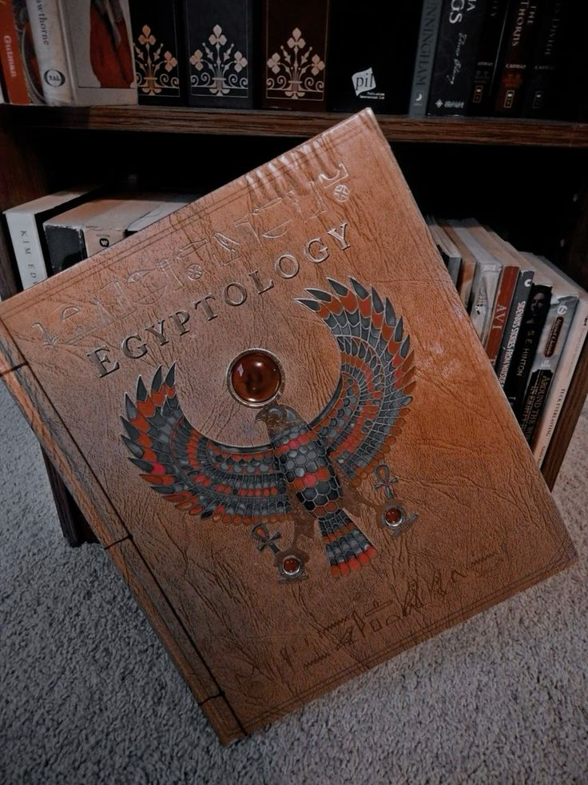
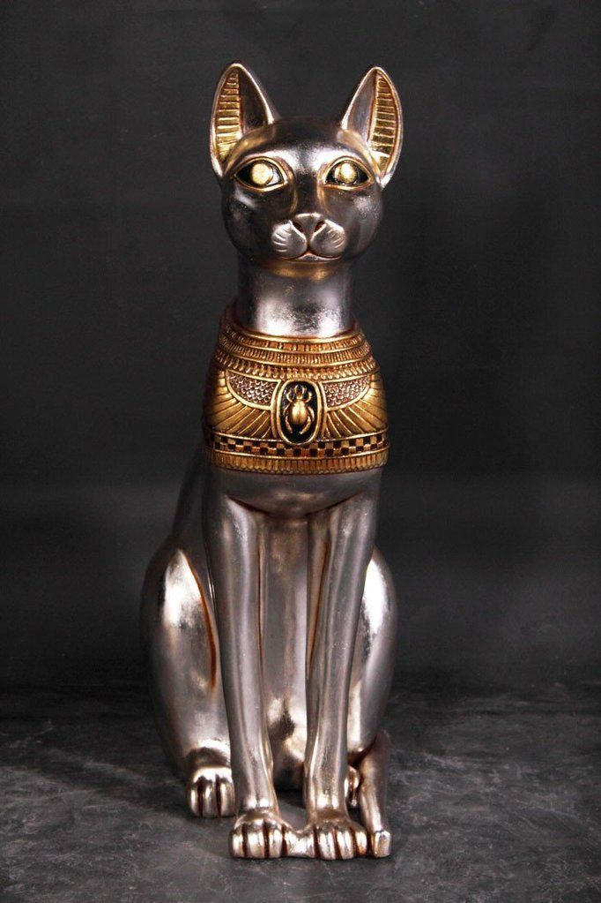
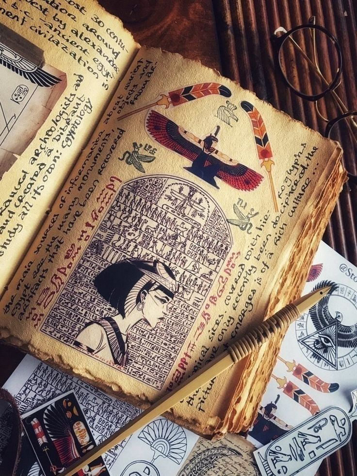

Currently situated at the National Museum of Scotland, this box bears the name of the Pharaoh Amenhotep II - not Imhotep - and is one of the finest pieces of woodwork to come out of Ancient Egypt...
This old and very life-like bust of Nefertiti is currently housed at Berlin’s Egyptian Museum, and the reason for not returning it was "it's too fragile to transport". We wonder what they're implying...
The Kahun Gynaecological Papyrus dates back to 1800 BCE, and is located in the Petrie Museum of Egyptian Archaeology. It is perhaps the oldest medical text in the known world.